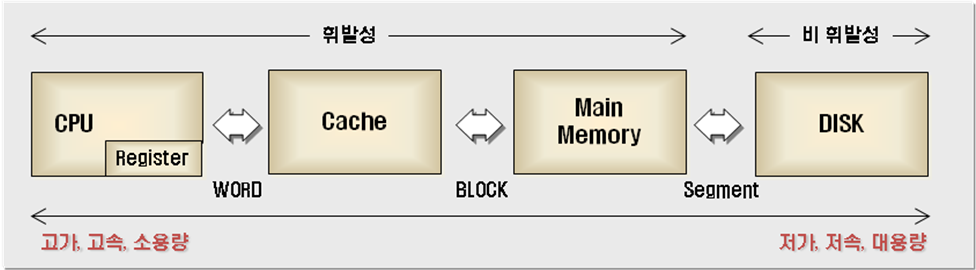

<!DOCTYPE html><html lang="lang"><head><meta charset="UTF-8"><meta http-equiv="X-UA-Compatible" content="IE=edge"><meta name="viewport" content="width=device-width, initial-scale=1, maximum-scale=1"><meta name="description" content="Item 48. 스트림 병렬화는 주의해서 적용하라"><meta name="keywords" content="Effective-Java"><meta name="author" content="Carrey"><meta name="copyright" content="Carrey"><title>Item 48. 스트림 병렬화는 주의해서 적용하라 | Carrey`s 기술블로그</title><link rel="shortcut icon" href="../../../../melody-favicon.ico"><link rel="stylesheet" href="../../../../css/index.css?version=1.9.0"><link rel="stylesheet" href="https://cdn.jsdelivr.net/npm/font-awesome@latest/css/font-awesome.min.css?version=1.9.0"><meta name="format-detection" content="telephone=no"><meta http-equiv="x-dns-prefetch-control" content="on"><link rel="dns-prefetch" href="https://cdn.jsdelivr.net"><meta http-equiv="Cache-Control" content="no-transform"><meta http-equiv="Cache-Control" content="no-siteapp"><script>var GLOBAL_CONFIG = { 
  root: '/',
  algolia: undefined,
  localSearch: undefined,
  copy: {
    success: 'Copy successfully',
    error: 'Copy error',
    noSupport: 'The browser does not support'
  },
  hexoVersion: '6.0.0'
} </script><meta name="generator" content="Hexo 6.0.0"><link rel="alternate" href="rss2.xml" title="Carrey`s 기술블로그" type="application/rss+xml">
</head><body><canvas class="fireworks"></canvas><i class="fa fa-arrow-right" id="toggle-sidebar" aria-hidden="true"></i><div id="sidebar" data-display="true"><div class="toggle-sidebar-info text-center"><span data-toggle="Toggle article">Toggle site</span><hr></div><div class="sidebar-toc"><div class="sidebar-toc__title">Catalog</div><div class="sidebar-toc__progress"><span class="progress-notice">You've read</span><span class="progress-num">0</span><span class="progress-percentage">%</span><div class="sidebar-toc__progress-bar"></div></div><div class="sidebar-toc__content"><ol class="toc"><li class="toc-item toc-level-1"><a class="toc-link" href="#%EC%84%9C%EB%A1%A0"><span class="toc-number">1.</span> <span class="toc-text">서론</span></a></li><li class="toc-item toc-level-1"><a class="toc-link" href="#%ED%8C%8C%EC%9D%B4%ED%94%84%EB%9D%BC%EC%9D%B8-%EB%B3%91%EB%A0%AC%ED%99%94%EA%B0%80-%EB%B6%88%EA%B0%80%EB%8A%A5-%ED%95%9C-%EA%B2%BD%EC%9A%B0-%EC%84%B1%EB%8A%A5-%EA%B0%9C%EC%84%A0%EC%9D%B4-%EB%90%98%EC%A7%80-%EC%95%8A%EB%8A%94%EB%8B%A4"><span class="toc-number">2.</span> <span class="toc-text">파이프라인 병렬화가 불가능 한 경우 성능 개선이 되지 않는다.</span></a></li><li class="toc-item toc-level-1"><a class="toc-link" href="#%EC%96%B8%EC%A0%9C-%EB%B3%91%EB%A0%AC%ED%99%94%EB%A5%BC-%EC%82%AC%EC%9A%A9%ED%95%98%EB%82%98"><span class="toc-number">3.</span> <span class="toc-text">언제 병렬화를 사용하나?</span></a></li><li class="toc-item toc-level-1"><a class="toc-link" href="#%EC%B0%B8%EC%A1%B0-%EC%A7%80%EC%97%AD%EC%84%B1-Locality-of-Reference"><span class="toc-number">4.</span> <span class="toc-text">참조 지역성 (Locality of Reference)</span></a></li><li class="toc-item toc-level-1"><a class="toc-link" href="#%EC%8A%A4%ED%8A%B8%EB%A6%BC-%ED%8C%8C%EC%9D%B4%ED%94%84%EB%9D%BC%EC%9D%B8%EC%9D%98-%EC%A2%85%EB%8B%A8-%EC%97%B0%EC%82%B0"><span class="toc-number">5.</span> <span class="toc-text">스트림 파이프라인의 종단 연산</span></a></li><li class="toc-item toc-level-1"><a class="toc-link" href="#%EB%B3%91%EB%A0%AC%ED%99%94%EC%97%90-%EB%8C%80%ED%95%B4-%EC%9E%98%EB%AA%A8%EB%A5%B4%EB%A9%B4-%EC%95%88%ED%95%98%EB%8A%94%EA%B2%8C-%EB%82%AB%EB%8B%A4"><span class="toc-number">6.</span> <span class="toc-text">병렬화에 대해 잘모르면 안하는게 낫다</span></a><ol class="toc-child"><li class="toc-item toc-level-2"><a class="toc-link" href="#Stream-%EB%AA%85%EC%84%B8%EB%8A%94-%ED%95%A8%EC%88%98-%EA%B0%9D%EC%B2%B4%EC%97%90-%EB%8C%80%ED%95%9C-%EA%B7%9C%EC%95%BD"><span class="toc-number">6.1.</span> <span class="toc-text">Stream 명세는 함수 객체에 대한 규약</span></a></li></ol></li><li class="toc-item toc-level-1"><a class="toc-link" href="#%EC%8A%A4%ED%8A%B8%EB%A6%BC-%EB%B3%91%EB%A0%AC%ED%99%94%EB%8A%94-%EC%98%A4%EC%A7%81-%EC%84%B1%EB%8A%A5-%EC%B5%9C%EC%A0%81%ED%99%94-%EC%88%98%EB%8B%A8%EC%9E%84%EC%9D%84-%EA%B8%B0%EC%96%B5%ED%95%98%EB%9D%BC"><span class="toc-number">7.</span> <span class="toc-text">스트림 병렬화는 오직 성능 최적화 수단임을 기억하라</span></a></li><li class="toc-item toc-level-1"><a class="toc-link" href="#%EC%8A%A4%ED%8A%B8%EB%A6%BC-%ED%8C%8C%EC%9D%B4%ED%94%84%EB%9D%BC%EC%9D%B8-%EB%B3%91%EB%A0%AC%ED%99%94%EA%B0%80-%ED%9A%A8%EA%B3%BC%EC%A0%81%EC%9D%B8-%EC%98%88"><span class="toc-number">8.</span> <span class="toc-text">스트림 파이프라인 병렬화가 효과적인 예</span></a></li><li class="toc-item toc-level-1"><a class="toc-link" href="#Random%ED%95%9C-%EC%88%98%EC%9D%98-%EA%B2%BD%EC%9A%B0"><span class="toc-number">9.</span> <span class="toc-text">Random한 수의 경우</span></a></li><li class="toc-item toc-level-1"><a class="toc-link" href="#%EC%9A%94%EC%95%BD"><span class="toc-number">10.</span> <span class="toc-text">요약</span></a></li><li class="toc-item toc-level-1"><a class="toc-link" href="#%EC%B0%B8%EA%B3%A0"><span class="toc-number">11.</span> <span class="toc-text">참고</span></a></li></ol></div></div><div class="author-info hide"><div class="author-info__avatar text-center"></div><div class="author-info__name text-center">Carrey</div><div class="author-info__description text-center"></div><hr><div class="author-info-articles"><a class="author-info-articles__archives article-meta" href="../../../../archives"><span class="pull-left">Articles</span><span class="pull-right">115</span></a><a class="author-info-articles__tags article-meta" href="../../../../tags"><span class="pull-left">Tags</span><span class="pull-right">27</span></a></div></div></div><div id="content-outer"><div class="no-bg" id="top-container"><div id="page-header"><span class="pull-left"> <a id="site-name" href="../../../../index.html">Carrey`s 기술블로그</a></span><i class="fa fa-bars toggle-menu pull-right" aria-hidden="true"></i><span class="pull-right menus">   <a class="site-page" href="/">Home</a><a class="site-page" href="/archives">Archives</a><a class="site-page" href="/tags">Tags</a><a class="site-page" href="/categories">Categories</a></span><span class="pull-right"></span></div><div id="post-info"><div id="post-title">Item 48. 스트림 병렬화는 주의해서 적용하라</div><div id="post-meta"><time class="post-meta__date"><i class="fa fa-calendar" aria-hidden="true"></i> 2019-02-17</time></div></div></div><div class="layout" id="content-inner"><article id="post"><div class="article-container" id="post-content"><h1 id="서론"><a href="#서론" class="headerlink" title="서론"></a>서론</h1><p>주류 언어 중, 동시성 프로그래밍 측면에서는 항상 자바는 앞서왔다.<br>처음 릴리즈된 1996년부터 스레드, 동기화, wait&#x2F;notify를 지원했다. </p>
<ul>
<li>자바 5부터는 동시성 컬렉션인 java.util.concurrent 라이브러리와 실행자(Excutor) 프레임워크를 지원했다. </li>
<li>자바 7부터는 고성능 병렬 분해(parallel decom-position) 프레임워크인 fork-join 패키지를 추가했다.<br>(Fork-join pool에 대한 설명은 <a target="_blank" rel="noopener" href="https://okky.kr/article/345720">https://okky.kr/article/345720</a> 여기 참고)  </li>
<li>자바 8부터는 parallel 메서드만 한 번 호출하면 파이프라인을 병렬 실행할 수 있는 Stream을 지원했다.</li>
</ul>
<p>자바로 동시성 프로그램을 작성하기가 점점 쉬워지고 있지만, 이를 올바르고 빠르게 작성하는 일은 어렵다.<br>동시성 프로그래밍을 할 때는 안전성(safety)과 응답 가능(liveness) 상태를 유지하기 애써야 한다.<br>병렬 스트림 파이프라인 프로그래밍에서도 다를 바 없다.</p>
<h1 id="파이프라인-병렬화가-불가능-한-경우-성능-개선이-되지-않는다"><a href="#파이프라인-병렬화가-불가능-한-경우-성능-개선이-되지-않는다" class="headerlink" title="파이프라인 병렬화가 불가능 한 경우 성능 개선이 되지 않는다."></a>파이프라인 병렬화가 불가능 한 경우 성능 개선이 되지 않는다.</h1><figure class="highlight java"><table><tr><td class="gutter"><pre><span class="line">1</span><br><span class="line">2</span><br><span class="line">3</span><br><span class="line">4</span><br><span class="line">5</span><br><span class="line">6</span><br><span class="line">7</span><br><span class="line">8</span><br><span class="line">9</span><br><span class="line">10</span><br><span class="line">11</span><br><span class="line">12</span><br><span class="line">13</span><br><span class="line">14</span><br><span class="line">15</span><br><span class="line">16</span><br><span class="line">17</span><br><span class="line">18</span><br><span class="line">19</span><br><span class="line">20</span><br><span class="line">21</span><br><span class="line">22</span><br><span class="line">23</span><br><span class="line">24</span><br><span class="line">25</span><br><span class="line">26</span><br><span class="line">27</span><br><span class="line">28</span><br><span class="line">29</span><br></pre></td><td class="code"><pre><span class="line"><span class="meta">@RunWith(SpringRunner.class)</span></span><br><span class="line"><span class="keyword">public</span> <span class="keyword">class</span> <span class="title class_">MersenPrimeTest</span> &#123;</span><br><span class="line"></span><br><span class="line">    <span class="meta">@Test</span></span><br><span class="line">    <span class="keyword">public</span> <span class="keyword">void</span> <span class="title function_">test1</span><span class="params">()</span> &#123;</span><br><span class="line">        <span class="type">long</span> <span class="variable">start</span> <span class="operator">=</span> System.currentTimeMillis();</span><br><span class="line">        primes().map(p -&gt; TWO.pow(p.intValueExact()).subtract(ONE))</span><br><span class="line">                .filter(mersenne -&gt; mersenne.isProbablePrime(<span class="number">50</span>))</span><br><span class="line">                .limit(<span class="number">20</span>)</span><br><span class="line">                .forEach(System.out::println);</span><br><span class="line">        <span class="type">long</span> <span class="variable">end</span> <span class="operator">=</span> System.currentTimeMillis();</span><br><span class="line">        System.out.println(<span class="string">&quot;running time : &quot;</span> + (end - start));</span><br><span class="line">    &#125;</span><br><span class="line"></span><br><span class="line">    <span class="meta">@Test</span></span><br><span class="line">    <span class="keyword">public</span> <span class="keyword">void</span> <span class="title function_">test2</span><span class="params">()</span> &#123;</span><br><span class="line">        <span class="type">long</span> <span class="variable">start</span> <span class="operator">=</span> System.currentTimeMillis();</span><br><span class="line">        primes().parallel().map(p -&gt; TWO.pow(p.intValueExact()).subtract(ONE))</span><br><span class="line">                .filter(mersenne -&gt; mersenne.isProbablePrime(<span class="number">50</span>))</span><br><span class="line">                .limit(<span class="number">20</span>)</span><br><span class="line">                .forEach(System.out::println);</span><br><span class="line">        <span class="type">long</span> <span class="variable">end</span> <span class="operator">=</span> System.currentTimeMillis();</span><br><span class="line">        System.out.println(<span class="string">&quot;running time : &quot;</span> + (end - start));</span><br><span class="line">    &#125;</span><br><span class="line"></span><br><span class="line">    <span class="keyword">static</span> Stream&lt;BigInteger&gt; <span class="title function_">primes</span><span class="params">()</span> &#123;</span><br><span class="line">        <span class="keyword">return</span> Stream.iterate(TWO, BigInteger::nextProbablePrime);</span><br><span class="line">    &#125;</span><br><span class="line">&#125;</span><br></pre></td></tr></table></figure>
<p>스트림을 이용한 처음 20개의 메르센 소수를 생성하는 프로그램이다.<br>이 프로그램을 실행 시켜보니 test1은 8.2초 정도의 수행시간을 보여줬다<br>test2는 stream의 성능을 향상시켜보고자 parallel()을 호출했다.<br>하지만 메르센 소수의 값이 프린트 되지 않았고, 강제로 중지 하기 전까지 계속 돌고 있었다.<br>아무것도 안된 원인은 stream 라이브러리가 이 파이프라인을 병렬화 하는 방법을 찾아내지 못했기 때문이다.  </p>
<ul>
<li>데이터 소스가 Stream.iterate인 경우</li>
<li>중간 연산으로 limit()를 사용하는 경우<br>위 두 가지 경우에는 파이프라인 병렬화로 성능 향상을 기대하기 어렵다.<br>뿐만 아니라 파이프라인 병렬화는 limit를 다룰 때 <strong>CPU 코어가 남는다면, 원소를 몇 개 더 처리한 후 제한된 개수 이후의 결과를 버려도 아무런 해가 없다고 가정한다.</strong></li>
</ul>
<p>따라서 스트림 파이프라인을 마구잡이로 병렬화 해선 안된다. 성능이 오히려 더 나빠질 수 있다.</p>
<h1 id="언제-병렬화를-사용하나"><a href="#언제-병렬화를-사용하나" class="headerlink" title="언제 병렬화를 사용하나?"></a>언제 병렬화를 사용하나?</h1><ul>
<li><p>ArrayList</p>
</li>
<li><p>HashMap</p>
</li>
<li><p>HashSet</p>
</li>
<li><p>ConcurrentHashMap</p>
</li>
<li><p>배열(Array)</p>
</li>
<li><p>int&#x2F;long 범위</p>
</li>
</ul>
<p>스트림의 데이터 소스가 위와 같은 클래스의 인스턴스 일 때 병렬화의 효과가 가장 좋다.<br>위 자료구조들은 모두 데이터를 원하는 크기로 정확하고 손쉽게 나눌 수 있어 다수의 스레드에 분배하기에 좋다.<br>나누는 작업은 <strong>Spliterator</strong>가 담당하며, Spliterator 객체는 Stream, Iterable의 spliterator() 메서드로 얻어올 수 있다.</p>
<p>또한 위의 자료구조는 <strong>참조 지역성(locality of reference)</strong> 이 높아 성능이 좋다.</p>
<h1 id="참조-지역성-Locality-of-Reference"><a href="#참조-지역성-Locality-of-Reference" class="headerlink" title="참조 지역성 (Locality of Reference)"></a>참조 지역성 (Locality of Reference)</h1><p></p>
<p>만일 캐시(Cache)가 어떤 별도의 알고리즘 없이 중간 매개체로만 사용된다면,<br>CPU가 Cache에서 데이터를 읽고 쓰는 속도나 메인 메모리에서 읽고 쓰는 속도나 마찬가지가 될 것이다.  </p>
<p>캐시 메모리가 제 역할을 하는 것은 데이터의 지역성(locality)를 이용하기 때문.<br>데이터의 지역성은 다음의 세가지로 분류</p>
<ul>
<li>공간적 지역성 (partial locality) <ul>
<li>메인메모리에서 CPU가 요청한 주소지점의 데이터에 인접한 주소들이 앞으로 참조될 확률이 높음을 의미</li>
<li>이웃한 원소들의 참조가 메모리에 연속적으로 저장되어 있어 다음 참조에 대한 접근 속도가 빠르게 함</li>
</ul>
</li>
<li>시간적 지역성 (temporal locality)<ul>
<li>한번 참조되었던 데이터는 후에 다시 참조될 가능성이 높음을 의미</li>
</ul>
</li>
<li>순차적 지역성 (sequential locality)<ul>
<li>따로 분기가 없는 한 데이터가 기억장치에 저장된 순서대로 인출되고 실행될 가능성이 높음을 의미 (FIFO)</li>
</ul>
</li>
</ul>
<h1 id="스트림-파이프라인의-종단-연산"><a href="#스트림-파이프라인의-종단-연산" class="headerlink" title="스트림 파이프라인의 종단 연산"></a>스트림 파이프라인의 종단 연산</h1><p>스트림 파이프라인의 종단연산의 동작방식 역시 병렬 수행 효율에 영향을 준다.<br>종단 연산 중 병렬화에 가장 적합한 것은 축소(reduction)이다.<br>축소는 파이프라인에서 만들어진 모든 원소를 하나로 합치는 작업이다.<br>예를 들면 min, max, sum, count 같이 완성된 형태로 제공되는 메서드가 있다.<br>anyMatch, allMatch, noneMatch처럼 조건에 맞음년 바로 반환되는 메서드도 병렬화에 적합하다.</p>
<p>반면, 가변 축소(Mutable Reduction)을 수행하는 Stream의 collect 메서드는 병렬화에 적합하지 않다.<br>컬렉션들을 합치는 부담이 크기 때문이다.</p>
<h1 id="병렬화에-대해-잘모르면-안하는게-낫다"><a href="#병렬화에-대해-잘모르면-안하는게-낫다" class="headerlink" title="병렬화에 대해 잘모르면 안하는게 낫다"></a>병렬화에 대해 잘모르면 안하는게 낫다</h1><p>스트림을 잘못 병렬화하면 (응답 불가를 포함해) 성능이 나빠질 뿐만 아니라 결과 자체가 잘못되거나 예상 못한 동작이 발생할 수 있다.<br>(결과가 잘못되거나 오동작하는 것은 <strong>안전 실패(safety failure)</strong> 이라 한다.)<br>안전 실패는 병렬화한 파이프라인이 사용하는 mappers, filters 혹은 프로그래머가 제공한 다른 함수 객체가 명시한대로 동작하지 않을 때 발생할 수 있다.</p>
<p>Stream 명세는 이때 사용되는 함수 객체에 관한 엄중한 규약을 정의해놨다.</p>
<h2 id="Stream-명세는-함수-객체에-대한-규약"><a href="#Stream-명세는-함수-객체에-대한-규약" class="headerlink" title="Stream 명세는 함수 객체에 대한 규약"></a>Stream 명세는 함수 객체에 대한 규약</h2><ol>
<li>Stream의 reduce 연산에 건네지는 accumulator(누적기)와 combiner(결합기) 함수는 반드시 <strong>결합법칙</strong>을 만족해야 한다.<br>(결합 법칙 : (a op b) op c &#x3D; a op (b op c))</li>
<li>간섭받지 않아야 한다 (non-interfering) - 파이프라인이 수행되는 동안 <strong>데이터소스가 변경되지 않아야한다.</strong></li>
<li>상태를 갖지 않아야 한다 (stateless)<br>위의 요구사항을 지키지 못하더라도 순차적으로 실행하면 올바른 결과를 얻을 수 있다.<br>하지만 병렬로 수행하면 기대한 결과가 나오지 않을 수 있고, 실패할 수 있으니 주의해야 한다.</li>
</ol>
<h1 id="스트림-병렬화는-오직-성능-최적화-수단임을-기억하라"><a href="#스트림-병렬화는-오직-성능-최적화-수단임을-기억하라" class="headerlink" title="스트림 병렬화는 오직 성능 최적화 수단임을 기억하라"></a>스트림 병렬화는 오직 성능 최적화 수단임을 기억하라</h1><p>다른 최적화와 마찬가지로 변경 전후로 반드시 성능테스트를 진행하여 병렬화를 사용할 가치가 있는지 확인해야 한다.<br>이상적으로는 운영 시스템과 같은 환경에서 테스트하는 것이 좋다.<br>보통은 병렬 스트림 파이프라인도 공통의 포크-조인 풀에서 수행되므로 (같은 스레드 풀을 사용)<br>잘못된 파이프라인 하나가 다른 부분의 성능에까지 악영향을 줄 수 있음을 유념하자<br>조건이 잘 갖춰지면 parallel 메서드 호출 하나로 거의 프로세서 코어 수에 비례하는 성능 향상을 볼 수 있다.</p>
<h1 id="스트림-파이프라인-병렬화가-효과적인-예"><a href="#스트림-파이프라인-병렬화가-효과적인-예" class="headerlink" title="스트림 파이프라인 병렬화가 효과적인 예"></a>스트림 파이프라인 병렬화가 효과적인 예</h1><figure class="highlight java"><table><tr><td class="gutter"><pre><span class="line">1</span><br><span class="line">2</span><br><span class="line">3</span><br><span class="line">4</span><br><span class="line">5</span><br><span class="line">6</span><br></pre></td><td class="code"><pre><span class="line"><span class="keyword">static</span> <span class="type">long</span> <span class="title function_">pi</span><span class="params">(<span class="type">long</span> n)</span> &#123;</span><br><span class="line">    <span class="keyword">return</span> LongStream.rangeClosed(<span class="number">2</span>, n)</span><br><span class="line">                     .mapToObj(BigInteger::valueOf)</span><br><span class="line">                     .filter(i -&gt; i.isProbablePrime(<span class="number">50</span>))</span><br><span class="line">                     .count();</span><br><span class="line">&#125;</span><br></pre></td></tr></table></figure>

<figure class="highlight java"><table><tr><td class="gutter"><pre><span class="line">1</span><br><span class="line">2</span><br><span class="line">3</span><br><span class="line">4</span><br><span class="line">5</span><br><span class="line">6</span><br><span class="line">7</span><br></pre></td><td class="code"><pre><span class="line"><span class="keyword">static</span> <span class="type">long</span> <span class="title function_">pi</span><span class="params">(<span class="type">long</span> n)</span> &#123;</span><br><span class="line">    <span class="keyword">return</span> LongStream.rangeClosed(<span class="number">2</span>, n)</span><br><span class="line">                     .parallel()</span><br><span class="line">                     .mapToObj(BigInteger::valueOf)</span><br><span class="line">                     .filter(i -&gt; i.isProbablePrime(<span class="number">50</span>))</span><br><span class="line">                     .count();</span><br><span class="line">&#125;</span><br></pre></td></tr></table></figure>

<ul>
<li>𝛑(n) : n 보다 작거나 같은 소수의 개수를 계산하는 함수</li>
<li>책에서는 위의 함수를 실행하는데 31초, 아래 parallel()이 추가된 함수를 실행하는데 9.2초가 걸렸다고 한다.</li>
</ul>
<h1 id="Random한-수의-경우"><a href="#Random한-수의-경우" class="headerlink" title="Random한 수의 경우"></a>Random한 수의 경우</h1><p>무작위 수들로 이뤄진 스트림을 병렬화하려거든 ThreadLocalRandom(혹은 Random) 보다는<br>SplittableRandom 인스턴스를 이용하자. SplittableRandom은 정확히 이럴 때 쓰고자 설계된 것이라<br>병렬화 하면 성능이 선형으로 증가한다. 한편 ThreadLocalRandom은 단일 스레드에서 사용하고자 만들어 졌다.<br>병렬로 사용하는 경우에는 SplittableRandom &gt; SplittableRandom 성능을 보인다.  </p>
<p>그냥 Random의 경우에는 모든 연산을 동기화하기 때문에 병렬 처리하면 최악의 성능을 보일 것이다.</p>
<h1 id="요약"><a href="#요약" class="headerlink" title="요약"></a>요약</h1><ul>
<li>계산도 올바로 수행하고 성능도 빨라질거라는 확신 없이는 스트림 파이프라인 병렬화는 시도조차 하지 말자</li>
<li>스트림 병렬화를 잘못하면 프로그램이 오동작하거나 성능이 급격히 떨어질 수 있다.</li>
<li>병렬화를 할 경우에는 성능테스트를 반드시 진행하고, 결과가 정확한지 확인해야 한다.</li>
<li>계산도 정확하고 성능도 좋아졌음이 확실할 때, 그럴 때만 병렬화 버전을 운영 코드에 반영하라</li>
</ul>
<h1 id="참고"><a href="#참고" class="headerlink" title="참고"></a>참고</h1><ul>
<li>Effective Java 3rd Edition - Item 48. 스트림 병렬화는 주의해서 적용하라</li>
<li><a target="_blank" rel="noopener" href="https://okky.kr/article/345720">Thread pool과 ForkJoinPool</a></li>
</ul>
</div></article><div class="post-meta__tag-list"><a class="post-meta__tags" href="../../../../tags/Effective-Java/">Effective-Java</a></div><nav id="pagination"><div class="prev-post pull-left"><a href="../../20/2019-02-20-mongodb-1/"><i class="fa fa-chevron-left">  </i><span>Mongo DB 기본쿼리</span></a></div><div class="next-post pull-right"><a href="../../16/effective-java-item47/"><span>Item 47. 반환 타입으로는 스트림보다 컬렉션이 낫다</span><i class="fa fa-chevron-right"></i></a></div></nav><div id="disqus_thread"></div><script>var unused = null;
var disqus_config = function () {
  this.page.url = 'https://jaehun2841.github.io/2019/02/17/effective-java-item48/';
  this.page.identifier = '2019/02/17/effective-java-item48/';
  this.page.title = 'Item 48. 스트림 병렬화는 주의해서 적용하라';
}
var d = document, s = d.createElement('script');
s.src = "https://" + 'Carrey' +".disqus.com/embed.js";
s.setAttribute('data-timestamp', '' + +new Date());
(d.head || d.body).appendChild(s);</script></div></div><footer><div class="layout" id="footer"><div class="copyright">&copy;2018 - 2023 By Carrey</div><div class="framework-info"><span>Driven - </span><a target="_blank" rel="noopener" href="http://hexo.io"><span>Hexo</span></a><span class="footer-separator">|</span><span>Theme - </span><a target="_blank" rel="noopener" href="https://github.com/Molunerfinn/hexo-theme-melody"><span>Melody</span></a></div><div class="busuanzi"><script async src="//busuanzi.ibruce.info/busuanzi/2.3/busuanzi.pure.mini.js"></script><span id="busuanzi_container_page_pv"><i class="fa fa-file"></i><span id="busuanzi_value_page_pv"></span><span></span></span></div></div></footer><i class="fa fa-arrow-up" id="go-up" aria-hidden="true"></i><script src="https://cdn.jsdelivr.net/npm/animejs@latest/anime.min.js"></script><script src="https://cdn.jsdelivr.net/npm/jquery@latest/dist/jquery.min.js"></script><script src="https://cdn.jsdelivr.net/npm/@fancyapps/fancybox@latest/dist/jquery.fancybox.min.js"></script><script src="https://cdn.jsdelivr.net/npm/velocity-animate@latest/velocity.min.js"></script><script src="https://cdn.jsdelivr.net/npm/velocity-ui-pack@latest/velocity.ui.min.js"></script><script src="../../../../js/utils.js?version=1.9.0"></script><script src="../../../../js/fancybox.js?version=1.9.0"></script><script src="../../../../js/sidebar.js?version=1.9.0"></script><script src="../../../../js/copy.js?version=1.9.0"></script><script src="../../../../js/fireworks.js?version=1.9.0"></script><script src="../../../../js/transition.js?version=1.9.0"></script><script src="../../../../js/scroll.js?version=1.9.0"></script><script src="../../../../js/head.js?version=1.9.0"></script><script>if(/Android|webOS|iPhone|iPod|iPad|BlackBerry/i.test(navigator.userAgent)) {
  $('#nav').addClass('is-mobile')
  $('footer').addClass('is-mobile')
  $('#top-container').addClass('is-mobile')
}</script></body></html>